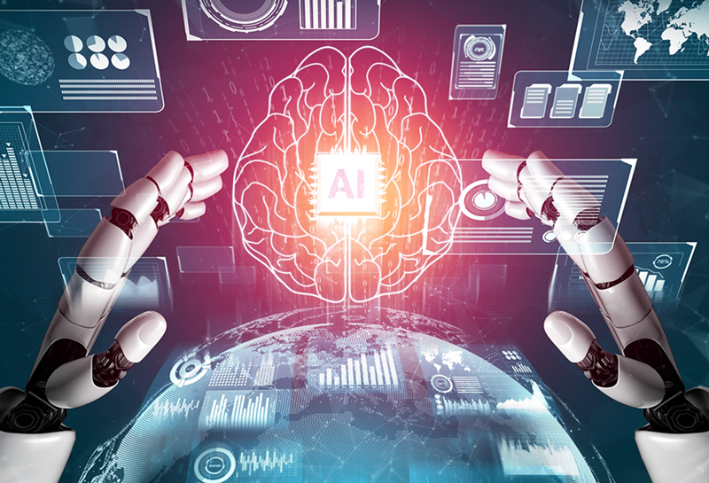

Un mundo Tecnologico
La tecnología es una respuesta al deseo del hombre de transformar el medio y mejorar su calidad de vida. Incluye conocimientos y técnicas desarrolladas a lo largo del tiempo que se utilizan de manera organizada con el fin de satisfacer alguna necesidad.
La palabra tecnología proviene de la unión de dos palabras griegas: «tekne», que es técnica, arte y, «logia», que significa destreza sobre algo.
Leer másLa tecnología es uno de los cuatro factores de la producción junto con el capital, la tierra y el trabajo.
El hombre utiliza la para satisfacer sus necesidades lo que puede implicar, transformar su medio, resolver problemas, aumentar la eficiencia, mejorar la estética, etc.
Leer másBlanda: Nos reporta bienes intangibles como nuevas teorías económicas o nuevas formas de administración de recursos. Dura: Se refiere a la que nos ayuda a producir bienes tangibles como coches modernos, edificios anti-terremotos, etc.
Flexible: Se refiere a la que se aplica en diversas actividades y áreas de estudio. Fija: Es aquella referida a un campo específico. Por ejemplo, una máquina para operaciones quirúrgicas.
Leer más
Inteligencia artificial (IA) se refiere a sistemas o máquinas que imitan la inteligencia humana para realizar tareas y pueden mejorar iterativamente a partir de la información que recopilan.
El término se aplica cuando una máquina imita las funciones cognitivas que los humanos asocian con otras mentes humanas, como aprender o resolver problemas, etc.

La inteligencia artificial automatiza el aprendizaje y descubrimiento repetitivos a través de datos.En lugar de automatizar tareas manuales, la inteligencia artificial realiza tareas computarizadas frecuentes de alto volumen de manera confiable y sin fatiga.
La robótica combina diversas disciplinas como la mecánica, la electrónica, la informática, la inteligencia artificial, la ingeniería de control y la física. Otras áreas importantes en robótica son el álgebra, los autómatas programables, la animatrónica y las máquinas de estados.